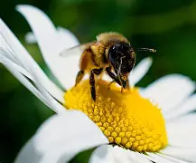
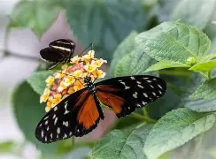
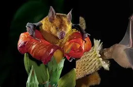

La Abeja: Un Insecto Fascinante
La abeja es un insecto volador que se encuentra en
casi todo el mundo.
Son conocidas por su papel
crucial en la polinización de plantas y
la producción de miel.
Las abejas viven en colonias, con
una reina que pone huevos y
miles de trabajadoras que se encargan de
cuidar a las crías y
recolectar néctar y polen.
Son insectos sociales y
comunicativos, que se
SSScomunican a través de danzas y feromonas.
¡Son verdaderas maravillas de la naturaleza!

La Mariposa: Un Símbolo de Transformación
La mariposa es un insecto volador que se caracteriza por sus alas coloridas
y delicadas. Nacen como huevos, se convierten en orugas, luego en pupas y finalmente
emergen como mariposas adultas. Son polinizadoras importantes y se alimentan del
néctar de las flores. Su ciclo de vida es un ejemplo de transformación y renovación.
¡Son criaturas hermosas y fascinantes!

El Murciélago: Un Mamífero Volador
El murciélago es un mamífero que tiene la capacidad de volar, siendo el único
mamífero con esta habilidad. Existen muchas especies de murciélagos y pueden
alimentarse de insectos, frutas o néctar. Son animales nocturnos y utilizan
la ecolocalización para orientarse en la oscuridad, emitiendo sonidos y
escuchando el eco para detectar objetos y presas.
Los murciélagos son muy importantes para el equilibrio del ecosistema,
ya que ayudan a controlar plagas de insectos y a polinizar plantas.
¡Son criaturas fascinantes y muy útiles para la naturaleza!